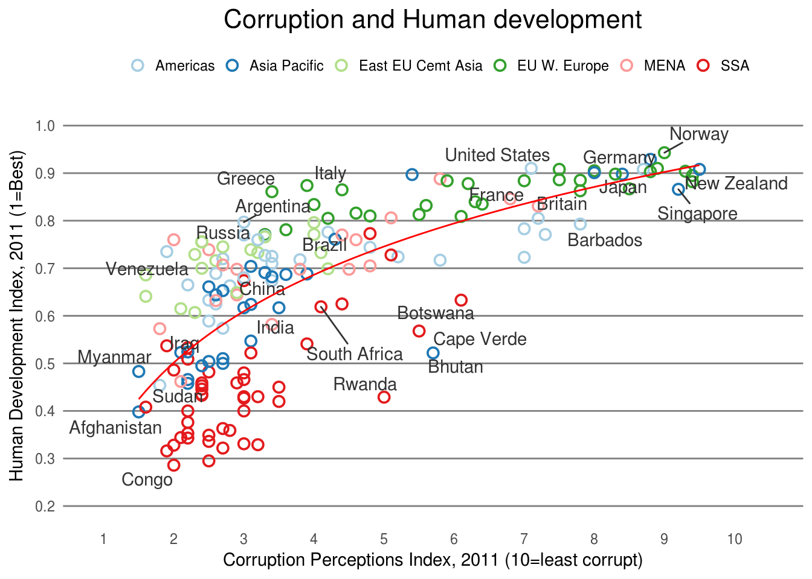

13 Challenge
13.1 Recreating the Economist Graph

econ <- read.csv("https://raw.githubusercontent.com/altaf-ali/ggplot_tutorial/master/data/economist.csv")
head(econ)## X Country HDI.Rank HDI CPI Region
## 1 1 Afghanistan 172 0.398 1.5 Asia Pacific
## 2 2 Albania 70 0.739 3.1 East EU Cemt Asia
## 3 3 Algeria 96 0.698 2.9 MENA
## 4 4 Angola 148 0.486 2.0 SSA
## 5 5 Argentina 45 0.797 3.0 Americas
## 6 6 Armenia 86 0.716 2.6 East EU Cemt AsiaCreate a scatter plot of the economist data with
CPIon the x-axis andHDIon the y-axisColor the points based on
Regionusing hollow pointsAdd a trend line
The trend line is too thick compared to the circles so we need to adjust it appropriately
Add text labels to the points
HINT: Create a subset of countries to label since we don’t want to label every point
target_countries <- c( "Russia", "Venezuela", "Iraq", "Myanmar", "Sudan", "Afghanistan", "Congo", "Greece", "Argentina", "Brazil", "India", "Italy", "China", "South Africa", "Spane", "Botswana", "Cape Verde", "Bhutan", "Rwanda", "France", "United States", "Germany", "Britain", "Barbados", "Norway", "Japan", "New Zealand", "Singapore" ) labeled_countries <- subset(econ, Country %in% target_countries)Adjust the x and y scales and use Color Brewer pallete
Paired.Remove vertical grid lines and move the legend
Add title “Corruption and Human development”
